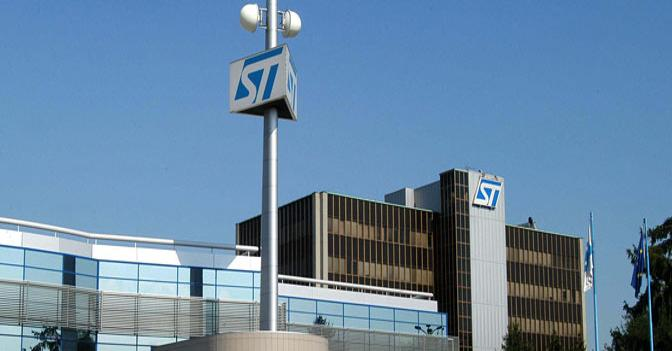
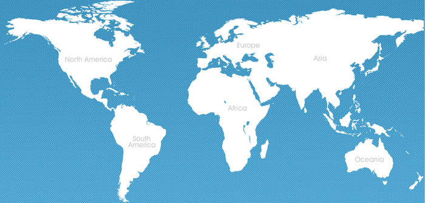

L'azienda

STMicroelectronics N.V. e' un'azienda italo-francese con sede a Ginevra (Svizzera), per la produzione di componenti elettronici a semiconduttore.E'sorta nel 1987 dalla fusione tra la Societa' Generale Semiconduttori (SGS), azienda di microelettronica fondata da Adriano Olivetti e poi passata all'IRI, e la divisione dei semiconduttori della francese Thomson. La denominazione iniziale era SGS-Thomson, ed e' stata contratta in ST nel maggio 1998 in seguito all'uscita dall'azionariato di Thomson.
Nazioni in cui e' presente la ST Microelectronics

E' presente principalmente in Italia (tramite la consociata STMicroelectronics srl) ad Agrate Brianza, Cornaredo (Castelletto), Marcianise Caserta, Catania e Arzano, e all'estero in Francia, Malta, Stati Uniti, Cina, Marocco, Singapore e Malesia. E' oggi guidata da Carlo Bozotti, Presidente e Chief Executive Officer, dopo che Pasquale Pistorio, a cui tanto si deve per lo sviluppo dell'azienda, e il cui mandato e' terminato il 18 marzo 2005, ha assunto la carica di Presidente Onorario. Alain Dutheil ne e' invece il chief operating officer e Vice Presidente del Corporate Executive Committee. Gli importanti impianti manifatturieri e laboratori di ricerca e sviluppo che la ST ha a Catania sono il nucleo principale della cosiddetta Etna Valley.